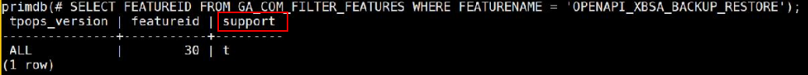

使用GaussDB备份功能前，需要开启XBSA特性和XBSA PITR特性白名单，确保备份功能正常。
打开XBSA特性白名单（适用于全量备份、增量备份和日志备份）
su - dmuser
source $HOME/.dmbashrc; source $DM_HOME/primdb/.infostore; gsql -d primdb -p 22202 -r -U apprim -W dmuser密码
UPDATE PUBLIC.GA_COM_TPOPS_FEATURES SET SUPPORT = TRUE WHERE FEATUREID = ( SELECT FEATUREID FROM GA_COM_FILTER_FEATURES WHERE FEATURENAME = 'OPENAPI_XBSA_BACKUP_RESTORE');
SELECT * FROM PUBLIC.GA_COM_TPOPS_FEATURES WHERE FEATUREID = ( SELECT FEATUREID FROM GA_COM_FILTER_FEATURES WHERE FEATURENAME = 'OPENAPI_XBSA_BACKUP_RESTORE');
查询命令回显示例如下（如果“support”的值为“t”，则表示开启白名单成功）：

UPDATE PUBLIC.GA_COM_TPOPS_FEATURES SET SUPPORT = FALSE WHERE FEATUREID = ( SELECT FEATUREID FROM GA_COM_FILTER_FEATURES WHERE FEATURENAME = 'OPENAPI_XBSA_BACKUP_RESTORE');
打开XBSA PITR特性白名单（适用于日志备份）
su - dmuser
source $HOME/.dmbashrc; source $DM_HOME/primdb/.infostore; gsql -d primdb -p 22202 -r -U apprim -W dmuser密码
UPDATE PUBLIC.GA_COM_TPOPS_FEATURES SET SUPPORT = TRUE WHERE FEATUREID = ( SELECT FEATUREID FROM GA_COM_FILTER_FEATURES WHERE FEATURENAME = 'TPOPS_PITR');
SELECT * FROM PUBLIC.GA_COM_TPOPS_FEATURES WHERE FEATUREID = ( SELECT FEATUREID FROM GA_COM_FILTER_FEATURES WHERE FEATURENAME = 'TPOPS_PITR');
UPDATE PUBLIC.GA_COM_TPOPS_FEATURES SET SUPPORT = FALSE WHERE FEATUREID = ( SELECT FEATUREID FROM GA_COM_FILTER_FEATURES WHERE FEATURENAME = 'TPOPS_PITR');